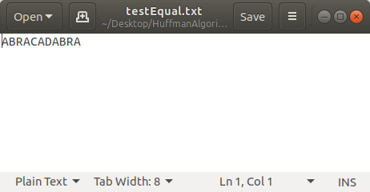
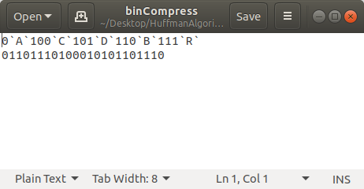
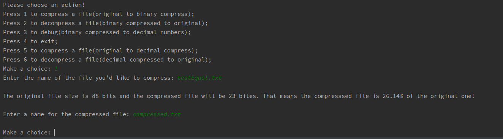
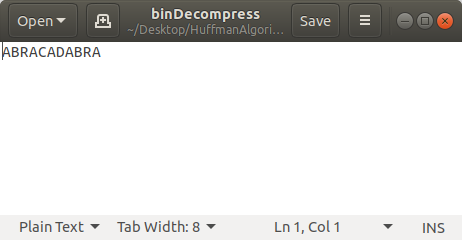
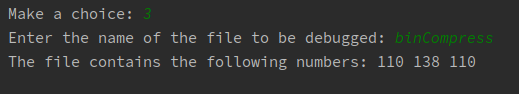

|
HuffmanAlgorithm
|
The aim of this project is to create an application that supports compression and decompression of text files using the Huffman algorithm. When started a menu appears on the screen and the user should input a digit between 1 and 6 in order to choose an action to be performed. The main functionality of the project is to support COMPRESS function that takes a file, reads its content and transforms it into a binary string. Moreover when a file is being compressed the compression ratio is printed on the screen whereas the binary sequence including an extra information about the Huffman tree(used when decompressing) are saved in a file. Another functionality is the DECOMPRESS function that takes an already compressed file and creates a new file containing the original content. The next function is called debug. It takes an already compressed file and prints the binary sequence as decimal numbers. When pressing 4 the program terminates. With 5 a text file is taken and compressed. The difference is from option 1 is that the binary sequence is translated into decimal sequence. By pressing 6 the user is able to decompress such files.
https://github.com/bdimitrow/HuffmanAlgorithm
Sources:
https://www.researchgate.net/figure/Huffman-Encoding-results_tbl4_49616246
https://www.researchgate.net/publication/44261387_Comparative_Study_between_Various_Algorithms_of_Data_Compression_Techniques
Having a file named 'testEqual.txt' with the following content:
The file after being compressed looks like that:
And the following prompt is printed:
The compressed file look like that after the decommpression:
This is the output:

1.8.13